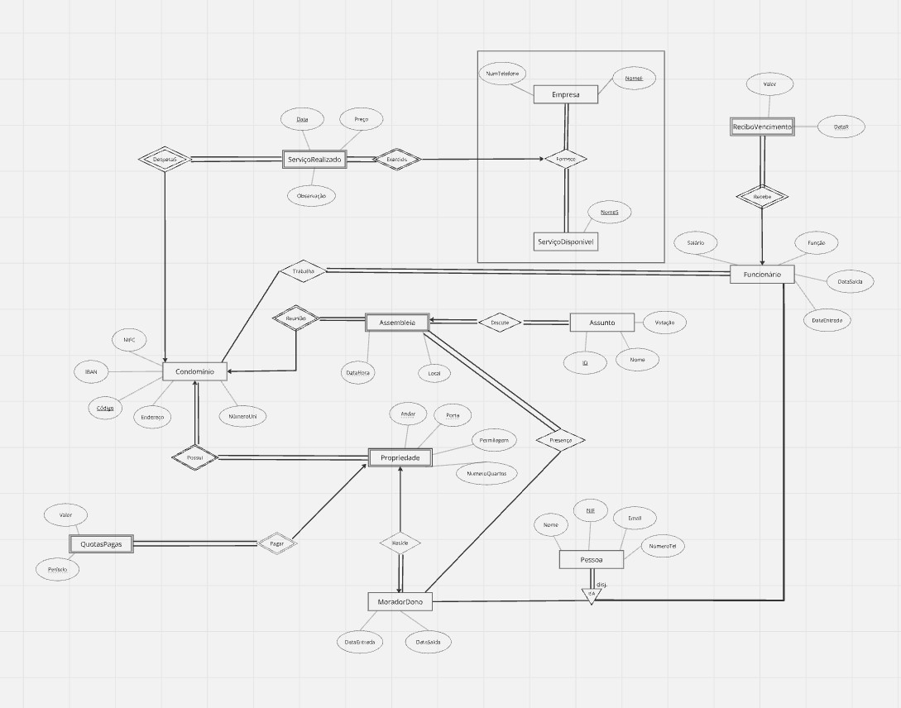

Database Management Project
Project made for DB (Database Management).

Overview & Features:
- Adding, deleting and modifying existing condominiums and properties.
- Creating and managing services that a certain condominium has or services that are outsourced by exterior companies, with the possibility to add and manage salaries for workers for recurring services.
- Managing and viewing current or future homeowners. Registering their issues and creating assembilies for discussion.
This project was developed as our main focus during the completion of this subject. After some consideration and conversation with teachers, our idea and focus for our DB was to be set on managing condominiums (or apartment blocks). The report for this project shows how to use the Oracle SQL server, the functions of each page, explains triggers, functions and views, and the relational model above. Some key features to be mentioned are:
The report for this project can be found below, as well as the APEX (Oracle Application Express Export File) file in the Github repository.
Tech Stack: Oracle, SQL, PLSQL, Miro